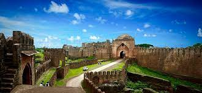
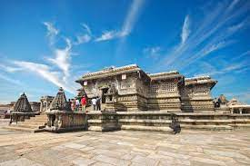
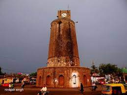
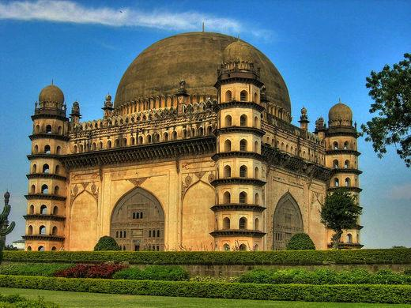
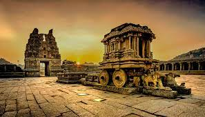

Karnataka in South India unrivalled tourist destination in India. In Karnataka lies, a treasure of
history
and
heritage.
It is home to magnificent architecture, massive palaces still owned by royalty, holy revered
temples
and
UNESCO World heritage sites. There is a lot to be discovered when it comes to historical monuments in
Karnataka.
There are a lot of monuments that are to be visited in this beautiful state
Here are some of the must-visit historical monuments in Karnataka.
Badami Cave Temples, Badami

Paying tribute to the vast and glorious rule of Chalukyas, next
on
our list
is one of the popular historical monuments in Karnataka. Badami Cave temples in Badami are the
epitome of the skill of arts, crafts and architecture.
The four cave temples of Badami were built between the 6th and 7th centuries. The first temple worships Lord Nataraja, while the second and third cave temples to Lord Vishnu and the fourth temple to Lord Mahavira, the founder of Jainism. Though the exteriors are simple, they have fascinating ornate interiors.
There are more than 81 sculptures of Lord Nataraja, ‘the cosmic dancer’, amorous couples, deities of Indian mythology and more. As Badami was the capital of Chalukyas for over 2 centuries, these are enthralling masterpiece
The four cave temples of Badami were built between the 6th and 7th centuries. The first temple worships Lord Nataraja, while the second and third cave temples to Lord Vishnu and the fourth temple to Lord Mahavira, the founder of Jainism. Though the exteriors are simple, they have fascinating ornate interiors.
There are more than 81 sculptures of Lord Nataraja, ‘the cosmic dancer’, amorous couples, deities of Indian mythology and more. As Badami was the capital of Chalukyas for over 2 centuries, these are enthralling masterpiece
Belgaum Fort

Belgaum Fort is a vibrant base of the well-known city of Belgaum
and
holds an important site as a heritage site in Karnataka that reflects the city’s past
history. In the mail transfer, there are two consecrated places, Ganapati and Durga. There
are two Italians made in the latest Chalukya style dating to about the year 1204 AD. Besides
these two holy houses, one lies in ruins. It is accepted that there were once 108 Jain
Temples and 101 Shiva Temples in the castle grounds.
Indeed, even today, we can find stones that form part of these structures. Apart from the sanctuaries of Jain and Shiva, there are two Muslims, mainly the Jamia Masjid and Safa Masjid, also listed within the post. These mosques are subject to Mughal and Deccani styles and have minars, vaults and curves. Apart from the mosques, it is a privilege to enter the underground entrance to promote Yellurgad.
Indeed, even today, we can find stones that form part of these structures. Apart from the sanctuaries of Jain and Shiva, there are two Muslims, mainly the Jamia Masjid and Safa Masjid, also listed within the post. These mosques are subject to Mughal and Deccani styles and have minars, vaults and curves. Apart from the mosques, it is a privilege to enter the underground entrance to promote Yellurgad.
Bidar Fort

Bidar Fort is a historic site in Karnataka. It is used by Adil
Shah
made of red stones later around the old in 1428 by Ahmed Shah Bahmani. Bidar’s fortification
includes various land symbols within its complex, among the most notable being the Rangin Mahal
or
Painted Palace; the Takht Mahal, or royal chamber; Jami Masjid or Great Mosque and Sola Khamba
Masjid or Sixteen-Pillar mosque.
Another unique feature of this castle is the unforgettable water supply framework, called karez. It is basically made up of an organization of underground canals tied up with upside poles. ‘Karez’ has helped to move it through underground passages to various places with people such as drinking, washing, watering pets, and floodplains and so on.
Another unique feature of this castle is the unforgettable water supply framework, called karez. It is basically made up of an organization of underground canals tied up with upside poles. ‘Karez’ has helped to move it through underground passages to various places with people such as drinking, washing, watering pets, and floodplains and so on.
Chennakeshavasvami Temple (Kesava Temple), Hasan

The 12th century Chennakeshavasvami Temple in Hassan is very much
worthy of being of our list best historical sites in Karnataka. Dedicated to Lord Vishnu, the
Hindu temple was built during the Hoysala Empire rule. The temple has mentions in medieval Hindu
texts, and remains an important pilgrimage site in Vaishnavism.
Remarkable for its architecture, sculptures, reliefs, friezes as well its iconography, inscriptions and history, marvel at artwork that recreate scenes of secular life in the 12th century, dancers and musicians, as well as a pictorial narration of Hindu texts such as the Ramayana, the Mahabharata and the Puranas. Though a Vaishnava temple, it includes themes from Shaivism, Shaktism, Jainism and Buddhism. The Chennakeshava temple is a testimony to the artistic, cultural and theological perspectives.
Remarkable for its architecture, sculptures, reliefs, friezes as well its iconography, inscriptions and history, marvel at artwork that recreate scenes of secular life in the 12th century, dancers and musicians, as well as a pictorial narration of Hindu texts such as the Ramayana, the Mahabharata and the Puranas. Though a Vaishnava temple, it includes themes from Shaivism, Shaktism, Jainism and Buddhism. The Chennakeshava temple is a testimony to the artistic, cultural and theological perspectives.
Choubara

In the center of Bidar is the Chaubara, an ancient clock tower. Chaubara literally means a building
facing four different routes, which is why one can see the planned meeting in the city of Bidar. The
monument is said to have been built before pre-Islamic times but to follow Islamic engineering in an
unusual way.
It has a rounded base and is operated by a black trap with a large clock mounted, which can be reached by a wandering eighty step. The clock tower serves as a point of view and measures 71 meters in length. This tube-shaped structure offers a breathtaking view of the city from the top.
It has a rounded base and is operated by a black trap with a large clock mounted, which can be reached by a wandering eighty step. The clock tower serves as a point of view and measures 71 meters in length. This tube-shaped structure offers a breathtaking view of the city from the top.
Gol Gumbaz

Gol Gumbaz is one of the most important heritage sites in Karnataka. History should be the last
place of
Muhammad Adil Shah (AD 1626-56), the seventh leader of Adil Shahi. Thus it is considered to be the
landmark of Bijapur. Gol Gumbaz is a glorious example of Islamic engineering found in the Deccan
region
directly. The emblem is loaded with the elements of the brand name of the traditional style of
Islamic
or Persian architecture and the most visible object is the tail of the focus. The landmark shows its
magnificent architecture, seven-fold octagonal plaques, curves on the sides, decorative fences,
columns
and a curved arrow to conquer the towers.
Hampi Group of Monuments

Located on the bank south of the Tungabhadra River, Hampi is a historic town that continues to be a
common tourist destination in North Karnataka and gloves once the seat of the Kingdom of
Vijayanagara.
The city is said to have been built between AD 1336 – 1570. A major development is thought to have been completed during the reign of Raja Krishnadeva Raya, the main leader of the movement.
Today, although Hampi lies in the remains it is still a symbol of rich design and the power of building huge structures. Among the rebuilt buildings in Hampi is the Virupaksha Temple. Spread over 25 sq km there are a lot of cut stone structures where you see what you will be confused about.
The city is said to have been built between AD 1336 – 1570. A major development is thought to have been completed during the reign of Raja Krishnadeva Raya, the main leader of the movement.
Today, although Hampi lies in the remains it is still a symbol of rich design and the power of building huge structures. Among the rebuilt buildings in Hampi is the Virupaksha Temple. Spread over 25 sq km there are a lot of cut stone structures where you see what you will be confused about.